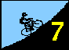
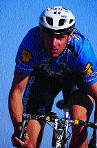
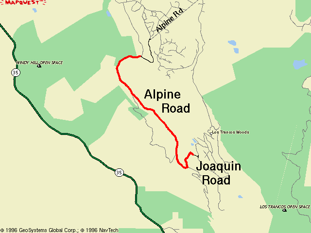

Check out Rob Schott's report!
Results are here!
|
Interlude Wedged between those cruel instruments of torture, Bohlman-On Orbit-Bohlman and Hicks-Loma Almaden, week 7 of the 1996 Low-Key Hillclimb series was a respite from the marathon climbs. With under 750 feet of climbing from the start to the top of Joaquin, today's ride was a sprint in comparison to the surrounding weeks. Yet the ride, through chilly air beneath the threatening overcast, wasn't easy. What's lost in distance and time is gained in intensity and concentration. From the "killermeter" to RAAM, all events in cycling demand 100% from the rider, and it is the ability of the rider to so provide that determines success. Of all the climbs in the series, Alpine-Joaquin placed the greatest emphasis on a good warm-up, a solid start, and the mental discipline to put the body right at the edge of failure, to spend the last bit of strength at the finish, and no sooner.... to give everything to the course. Too easy? If yes, you could have pushed harder.... gone faster.... done better. Riding at the edge... it's what courses like this demand, and no excuses are granted. Unless you're Tracy Colwell. Tracy blitzed the course in under 12 minutes, finishing, on a day where seconds are precious, over a minute ahead of the rest. Tracy now has clinched the overall top score in the men's division, as has coordinator Liz Benishin that of the women. Tracy has proven himself over everything from the epic slopes of Diablo to this week's sprint up Alpine, and is thus the worthy wearer of the leader's jersey. Full results to follow.... Wayne's modem is down :).
Rob Schott's report is posted! Finally, I can feel my fingers again, although I still haven't completely thawed. |
Today's ride is a study in contrast.
Riders will meet at the intersection of Portola Valley Road and Alpine Road in Portola Valley, part of the (in)famous Portola Valley ``Loop''. The start will be at the stop sign at the top of the opening "wall", where the road levels to become a blissful, meandering, narrow path through the open space preserves near Windy Hill. The ever-winding route, amidst the peace of the tree cover, lulls you into a state relaxed introspection. Ahhh..... life is good.
Gradually, though, the route steepens. The effort increases. Downshift. A little steeper...... out of the saddle. Still, not too bad.... it won't last long, you tell yourself.
Then, you arrive.
Not at the finish, but at the intersection of Alpine Road and Joaquin Road, just a stone's throw from the gate marking the end of the paved section of Alpine Road. As you turn left, the road turns up....The bliss is broken. The introspection is over. Now, the pain begins.
This week's ride was originally scheduled for dirt Alpine Road, the section past the turnoff onto Joaquin. However, a recent landslide has completely taken out a 50 meter section of the road, requiring riders not in the ``Daedalus Division'' to use a single-track detour challenging even for mountain bikes. Thus for 1996 Low-KeyTM will use the lower section of Alpine instead.
| Distance: | 3.0 miles to Joaquin 0.35 miles up Joaquin 3.3 miles total |
| Climbing: | 490 feet to Joaquin 250 feet more to finish (13.5% avg) |
| Format: | individual start |
| Start: | Intersection of Portola Valley Road and Alpine Road, Portola Valley. |
| Finish: | top of Joaquin Road |
| Reg Time: | 10:00 am to 10:20 am |
| Start Time: | 10:30 am |
| Fee: | 3 bucks |
| Weather: | near 53F and overcast. Light rain began approximately an hour after the finish. |
| Map: |  |
Thanks to Bill Bushnell (Alpine Road) and Lucas Pereira (Joaquin Road) for the climbing data.
djconnel@flash.net
{kind=link}